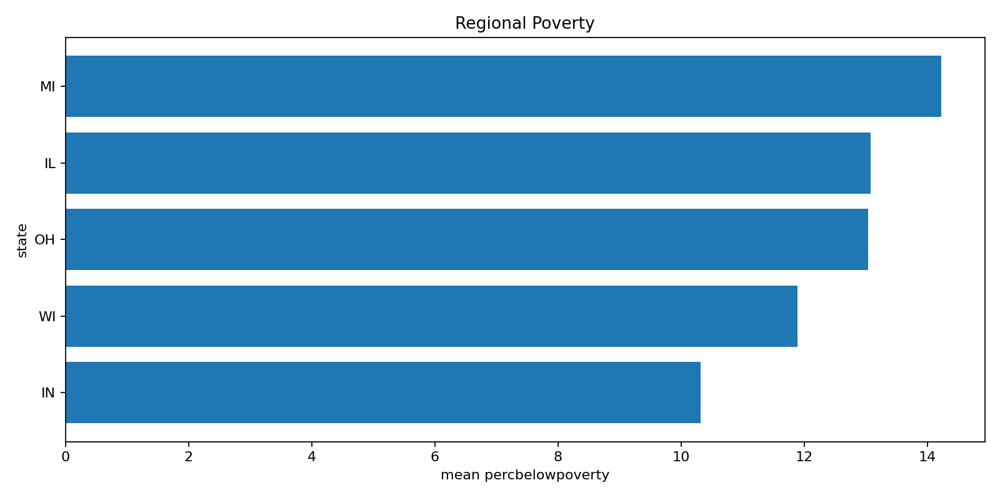

How do county poverty percentages vary across states?
The largest observed mean percbelowpoverty is 14.225 for MI. This ranking is descriptive, not a recommendation.

| segment | rows_used | metric | minimum | maximum |
|---|---|---|---|---|
| IL | 102 | 13.076446 | 2.714734 | 32.244278 |
| IN | 92 | 10.318443 | 3.591644 | 19.439019 |
| MI | 83 | 14.224789 | 4.131044 | 26.409920 |
| OH | 88 | 13.033071 | 4.897294 | 28.673385 |
| WI | 72 | 11.894845 | 2.180168 | 48.691099 |
Means weight counties equally, not people; historical county aggregates cannot describe individuals.
Recalculate population-weighted estimates using the correct poverty denominator.